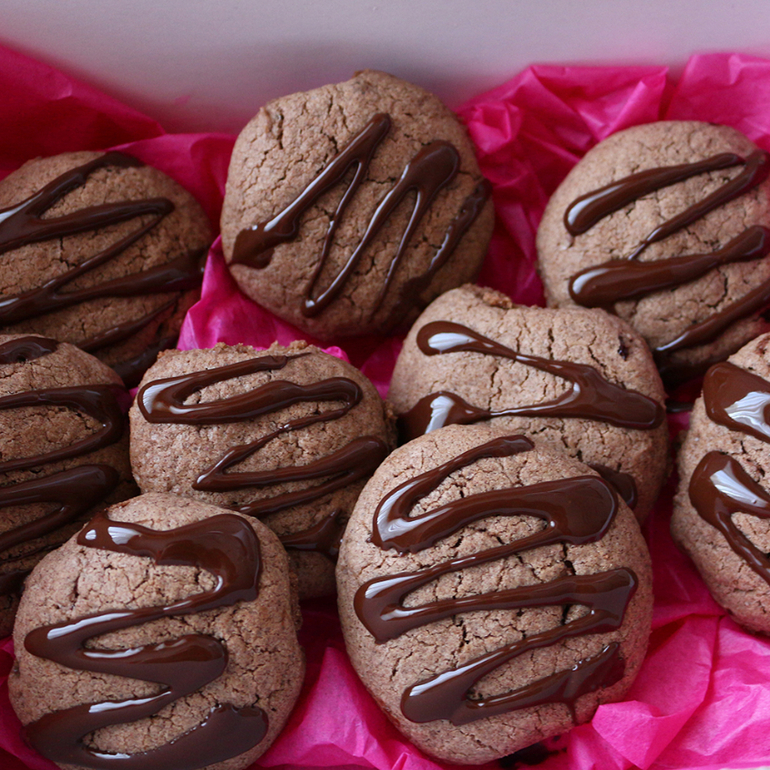
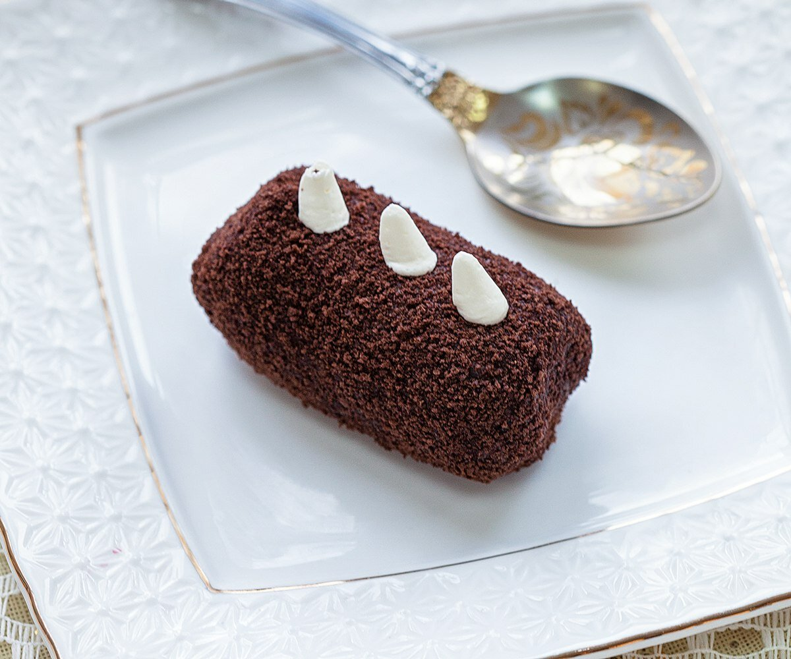
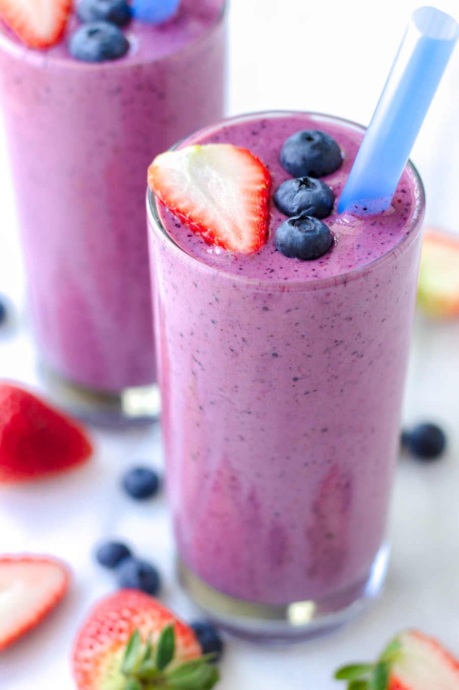
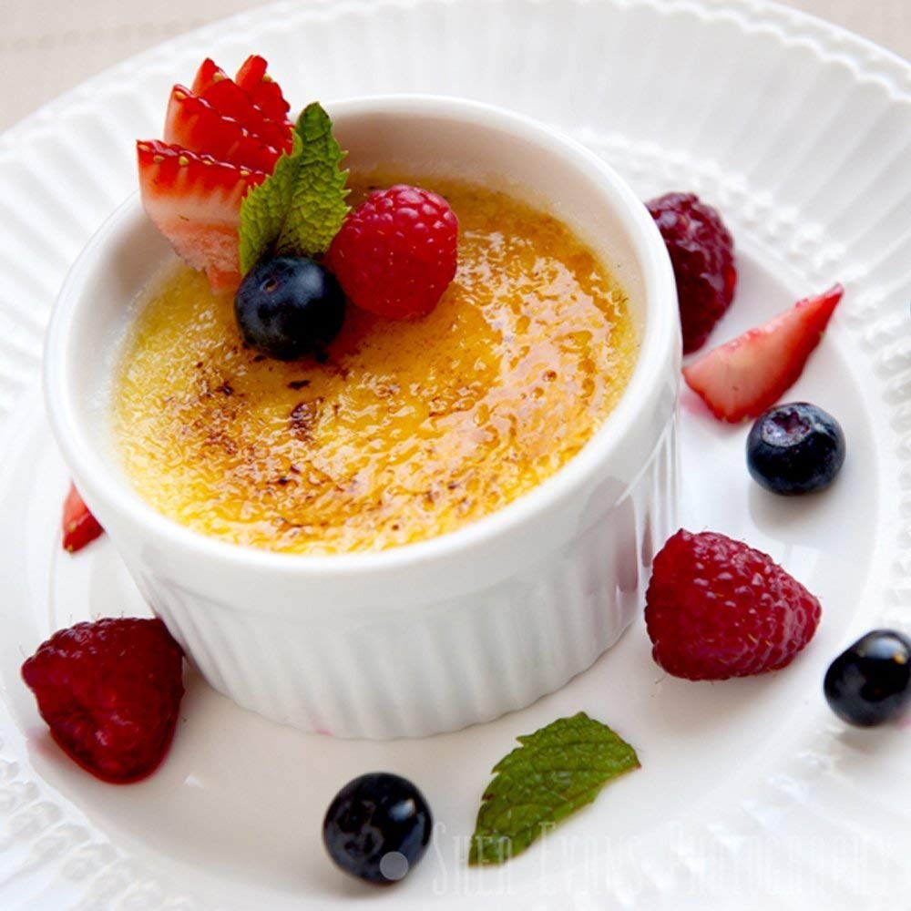
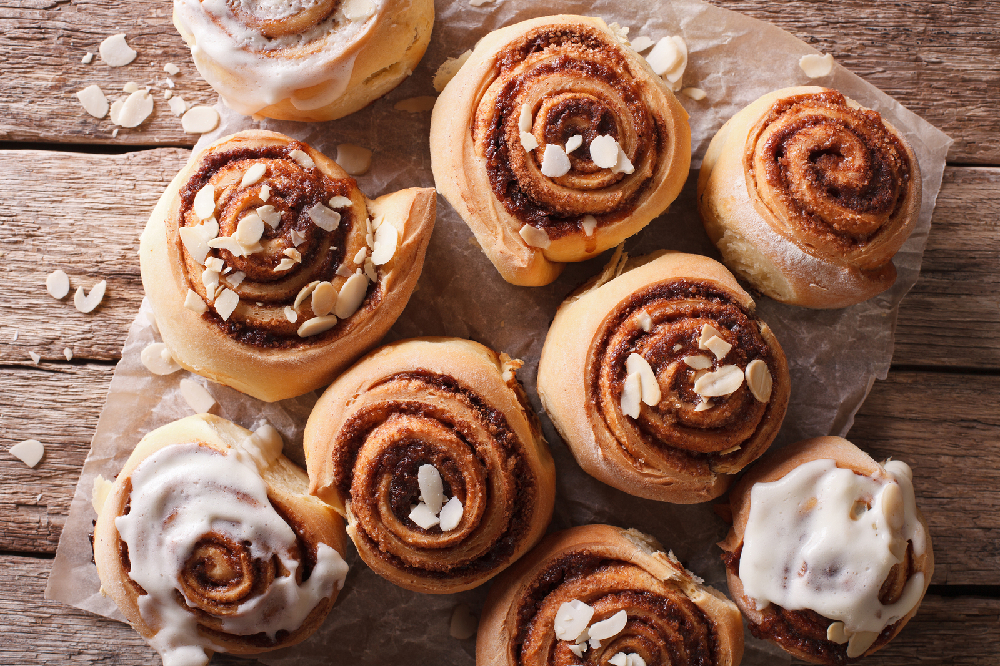

РЕЦЕПТЫ ДЕСЕРТОВ
-----------------------------------------------------------------------------------------------------------------------------------------------------------------------------------
ИМБИРНЫЕ ПРЯНИКИ
1. МЁД 100Г
2. СЛИВОЧНОЕ МАСЛО 100Г
3. ЯЙЦО 1 ШТ
4. САХАР 100Г
5. СОДА 1 Ч.Л. БЕЗ ГОРКИ
6. МУКА 360Г
7. ПРЯНОСТИ НА ВКУС
------------------------------------------------------------------------------------------------------------------------------------------------------------------------------------

ШОКОЛАДНОЕ ПЕЧЕНЬЕ
1. 275Г муки
2. 1 ЯЙЦО
3. 100Г САХАРА
4. 100Г МЯГКОГО МАСЛА
5. 5Г КАКАО-ПОРОШОКА
6. 10Г ВАНИЛЬНОГО САХАРА
7 .ЩЕПОТКА СОЛИ
8. 3Г ПИЩЕВОЙ СОДЫ
9. 1СТ ЛОЖКА 9% УКСУСА
-------------------------------------------------------------------------------------------------------------------------------------------------------------------------------------

ПИРОЖНОЕ "КАРТОШКА"
1. БИСКВИТ
2. СГУЩЁННОЕ МОЛОКО
3. СЛИВОЧНОЕ МАСЛО
5. КАКАО-ПОРОШОК
-------------------------------------------------------------------------------------------------------------------------------------------------------------------------------------

КЛУБНИЧНО-БАНАННОВЫЙ СМУЗЗИ
1. КЛУБНИКА
2. БАНАН
3. СЕМЕНА ЛЬНА
4. ЧЕРНИКА
5. МОЛОКО
6. СГУЩЁННОЕ МОЛОКО
-------------------------------------------------------------------------------------------------------------------------------------------------------------------------------------
КЕЙК-ПОПС
1. ПЕЧЕНЬЕ КЛАССИЧЕСКОЕ
2. СГУЩЁННОЕ МОЛОКО
3. ШОКОЛАД НА ВКУС (ОБМАКИВАЕМ КЕЙК-ПОПС В НЕГО)
4. ПОСЫПКА
5. ПАЛОСКИ ИЛИ ЗУБАЧИСТКИ
-------------------------------------------------------------------------------------------------------------------------------------------------------------------------------------

КРЕМ-БРЮЛЕ
ПРОЦЕСС ПРИГОТОВЛЕНИЯ СМОТРЕТЬ ЗДЕСЬ <----
1. 5 ЯЙИЧНЫХ ЖЕЛТКОВ
2. 30Г САХАРА
3. 480Г СЛИВОК 20%
4. 30МЛ ВОДЫ
5. 75Г САХАРА
6. ФОРМЫ
-------------------------------------------------------------------------------------------------------------------------------------------------------------------------------------

булочки SINNABON
1. СЛОЁННО-ДРОЖЖЕВОЕ ТЕСТО В ДЛИННУЮ ПОЛОСКУ
2. ВНУТРЬ НАСЫПАЕМ САХАР И КОРИЦУ
3. ВЫПЕКАЕМ 25 МИН 180 ГРАДУСОВ
-------------------------------------------------------------------------------------------------------------------------------------------------------------------------------------